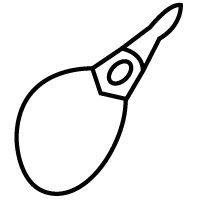
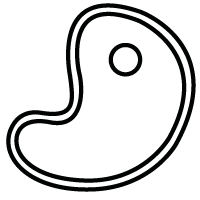
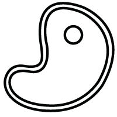

58,60€
El vino sale de una elaboración experimental a partir de una selección de uva de viñas muy viejas, entre 80 y 110 años, de muy bajo rendimiento y gran calidad se produce de manera muy limitada en tan solo las grandes añadas, donde se expresan el carácter del viñedo, del suelo y de la variedad, dentro de un conjunto armónico.
Vino de intensidad aromática alta, donde destacan los tostados y especiados aportados por el roble francés, junto a notas de fruta negra madura. En boca es fresco y untuoso, con taninos suaves y pulidos donde la madera está muy poco presente.
Tempranillo/Otras
Este vino marida bien con jamón y quesos curados, carnes rojas, aves, guisos de caza, tales como perdiz, conejo, venado, jabalí o corzo, incluso condimentados con salsas especiadas.
 
